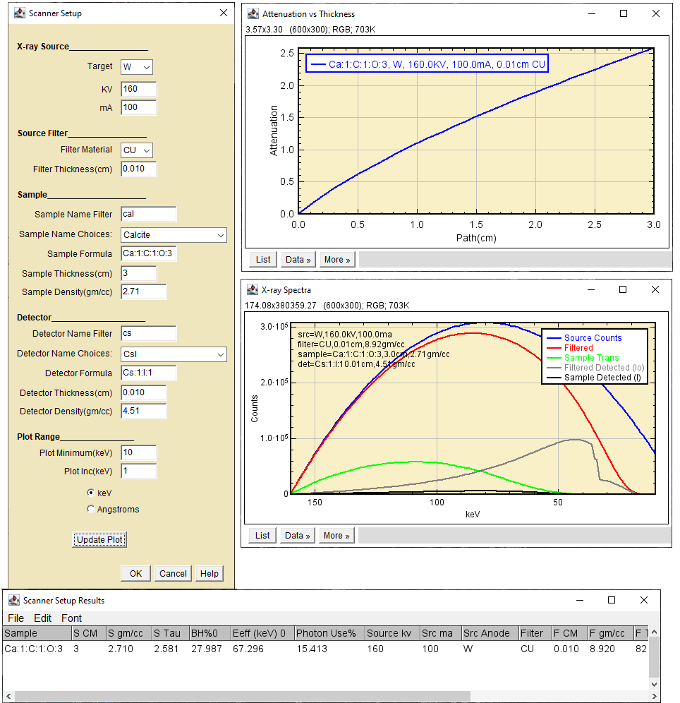

Scanner Setup is a 1D attenuation model that displays x-ray intensity
distributions at important points along the ray path. The plugin
provides a non-modal dialog to aid in selecting optimal CT scanner
operating conditions to improve signal-to-noise and reduce beam hardening
artifact.
The User Interface

ImageJ Plugin CT Scanner Setup, Initial
Target - The anode material of a conventional X-ray source.
KV - The accelerating potential of a conventional X-ray
source.
ma - The beam current of a conventional X-ray source.
Filter Material - Usually a metal foil placed just downstream
of the X-ray source.
Filter Thickness(cm) - The thickness of the filter in
centimeters.
Sample Name Filter - Clips the materials list choices to those
beginning with the characters in this textbox. Clear to restore the
full list.
Sample Name Choices -Pick a material from this list imported
from DefaultMaterials.csv
in the plugins/DialogData folder.
Sample Formula - Pre-populated from the name choice. Edit to
change the sample formula.
Sample Thickness(cm) - Pre-populated from the name choice.
Edit to change the sample thickness.
Sample Density(gm/cc) - Pre-populated from the name choice.
Edit to change the sample density.
Detector Name Filter - Clips the choices to those beginning
with the characters in this textbox. Clear to restore the full list.
Detector Name Choices -Pick a material from this list.
Detector Formula - Pre-populated from the name choice. Edit to
change the detector formula.
Detector Thickness(cm) - Pre-populated from the name choice.
Edit to change the detector thickness.
Detector Density(gm/cc) - Pre-populated from the name choice.
Edit to change the detector density.
Plot Minimum(keV) - Sets the X-ray Spectra plot minimum
energy. The maximum energy is the accelerating potential(KV).
Plot Inc(keV - Sets the energy step size for the polychromatic
scan. Large steps go faster. Small steps have better spectral
resolution.
keV Angstroms Buttons - Selects the plot x-axis scale
Update Plot - Recalculate the plots and results.
OK - Recalculate, update and exit leaving plot and results
windows open
Cancel - Exit closing plots and results windows.
Help - Brings up this page.
The top plot shows the relationship between sample thickness and
attenuation. It should look like a nearly straight line if the incident
photon beam is approximately monochromatic.
The middle plot shows intensity vs X-ray energy at five sampling
points along the beam path.
Blue, the source spectrum.
Red, the source spectrum after the filter.
Green, the source spectrum after the filter and sample.
Gray, source spectrum after the filter detected. "Io"
Black, the source spectrum after the filter and sample
detected. "I"
The window at the bottom shows the results for each trial
configuration.
The ImageJ plugin
The Scanner Setup plugin helps to fine-tune the
pre-hardening technique.
Pro:
It guides selection of the operating conditions that should
optimize contrast and attenuation measurements for your sample.
It provides an interactive way to minimize the severity of
beam hardening.
Con:
The detector is "ideal" in that it returns at each energy the
fraction of counts absorbed by the scintillator screen. Energy
dependent fluorescent yield, collection efficiency, gain and other
characteristics of real detectors are neglected.
The x-ray source intensity is calculated using the Kramers
equation and neglects characteristic emission lines and source
configuration.
Specimen scatter and fluorescence are neglected.
Due to the above characteristics, it may not be a good
predictor of your scanner's performance.